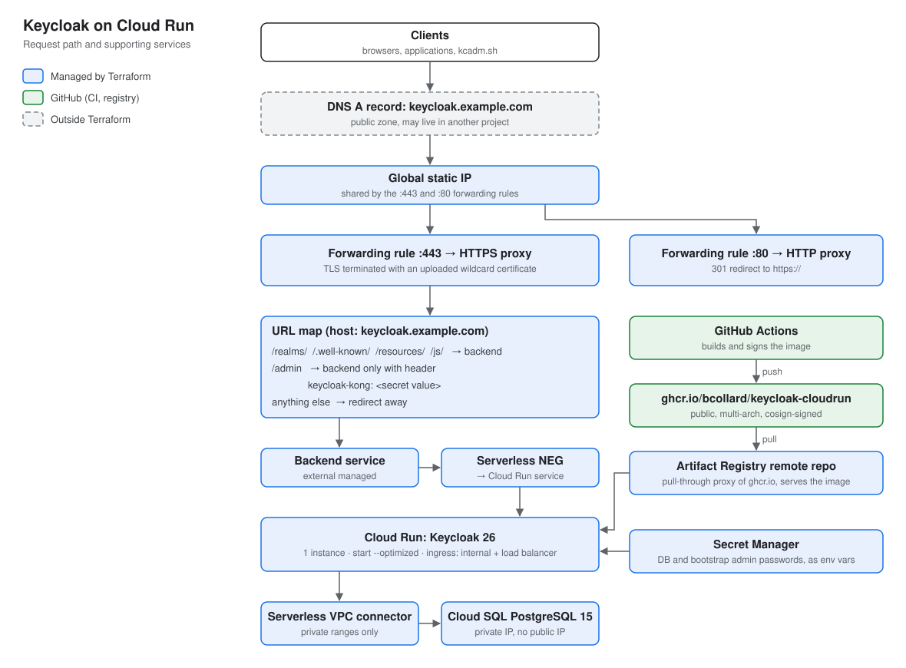
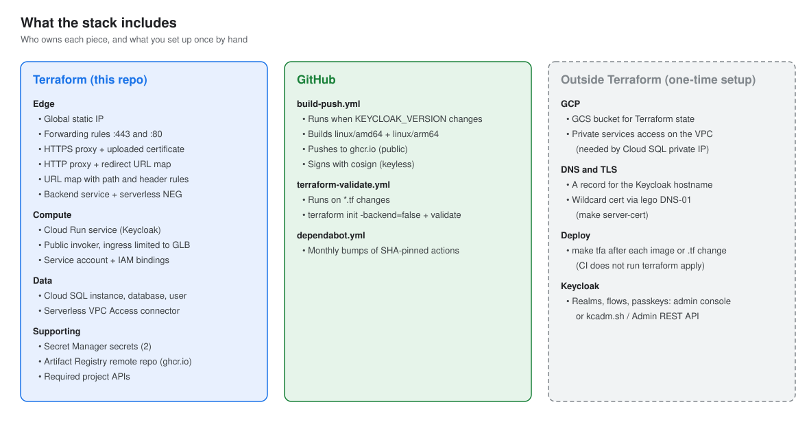

Terraform and a container build for running Keycloak 26 on Google Cloud Run, behind a global external Application Load Balancer, with Cloud SQL for PostgreSQL.
Apache-2.0. Image published to ghcr.io/bcollard/keycloak-cloudrun, signed with cosign.
A production-shaped Keycloak with no VMs or Kubernetes cluster to run.
Cloud Run runs an optimized image (kc.sh start --optimized) with health, metrics and the PostgreSQL driver built in.
Cloud SQL for PostgreSQL on a private IP only, reached through a Serverless VPC Access connector.
Static IP, TLS on 443, HTTP-to-HTTPS redirect, and a URL map that only exposes Keycloak's public paths.
/admin is forwarded only when the request carries a shared-secret header. Cloud Run ingress blocks the *.run.app URL.
GitHub Actions builds a multi-arch image, pushes it to GHCR and signs it with cosign. Cloud Run deploys it by digest through an Artifact Registry proxy.
Database and bootstrap admin passwords are stored in Secret Manager and injected as environment variables.
How a request reaches Keycloak.
/realms/, /.well-known/, /resources/ and /js/ to the backend. /admin needs the header. Everything else is redirected.
Who creates what.
| Owner | Resources |
|---|---|
| Terraform | Static IP, forwarding rules, HTTPS and HTTP proxies, URL maps, SSL certificate, backend service, serverless NEG, Cloud Run service, service account and IAM, Cloud SQL, VPC Access connector, Secret Manager secrets, Artifact Registry remote repository, project APIs |
| GitHub Actions | Multi-arch image build, push to GHCR, cosign signing, terraform validate, Renovate |
| You, once | GCS state bucket, private services access on the VPC, DNS A record, wildcard certificate, realm configuration |

Requires a GCP project with billing, Terraform 1.10 or later, a GCS bucket for state, and private services access on the default VPC.
git clone https://github.com/bcollard/keycloak-cloudrun
cd keycloak-cloudrun
cp backend.hcl.example backend.hcl # state bucket and prefix
cp terraform.tfvars.example values.auto.tfvars # project, hostname, passwordsexport DNS_ZONE_NAME=example.com GCP_PROJECT_DNS=my-dns-project \
GCP_CREDENTIALS_FILE=/path/to/dns-sa.json ACME_EMAIL=me@example.com
make server-certmake gcloud-login GCLOUD_CONFIG=my-config
make tfi
make tfp
make tfaPoint the hostname's A record at the forwarding_rule_ip_address output.
Preview and experimental features for agent and workload identity, baked in at build time.
| Flag | Status in 26.8 | Purpose |
|---|---|---|
cimd:v1 | experimental | OAuth Client ID Metadata Document, required by MCP clients since spec 2025-11-25 |
identity-assertion-jwt:v1 | experimental | Identity Assertion JWT Authorization Grant (ID-JAG) |
spiffe:v1 | preview | SPIFFE trust relationship provider |
parameterized-scopes:v1 | preview | Parameterized OAuth 2.0 client scopes |
client-admin-api:v2 | preview | Client Admin API v2 |
Standard token exchange v2, JWT authorization grant and Kubernetes service-account grants are on by default since Keycloak 26.6.
KEYCLOAK_VERSION changes. You run terraform apply yourself.KEYCLOAK_VERSION and push. When the build finishes, set keycloak_version and keycloak_image_digest (from make image-digest) and run make tfa.name_prefix and create_before_destroy, so the proxy switches to the new one before the old one is deleted.--features list at build and run time. Keep the Dockerfile and cloudrun.tf values identical.